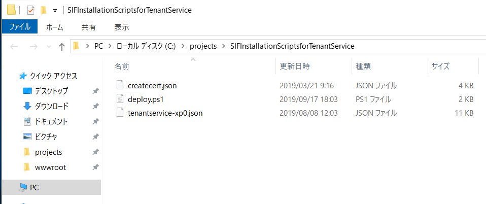
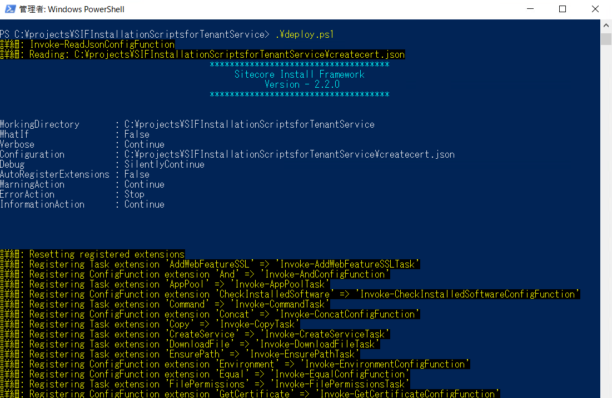
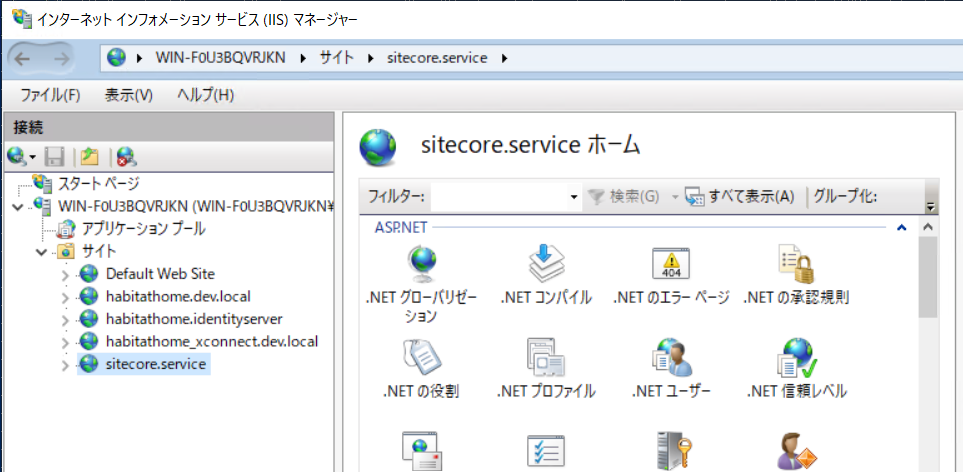

4.7. Data Exchange Framework Tenant Service¶
ここでは Data Exchange Framework を利用する上で、モジュール連携などで活用する Tenant Service の設定方法を紹介します。
4.7.1. モジュールのダウンロード¶
以下のページから、Tenant Service の分類に記載されている 2 つのモジュールをインストールしてください。
-
Data Exchange Framework Tenant Web Service ( Sitecore Data Exchange Framework Tenant Web Service 4.0.0 rev. 01437.scwdp.zip )
SIF installation scripts for Tenant Service ( SIFInstallationScriptsforTenantService.zip )
インストールをするためには、Sitecore Install Framework がセットアップされている必要があります。
4.7.2. Tenant Service のインストール¶
Tenant Web Service をインストールする手順は以下の通りです。まず、SIF installation scripts for Tenant Service を展開してください。ここでは、 c:projects 配下に展開しました。
{kind=link}
同じフォルダに Data Exchange Framework Tenant Web Service のパッケージを展開します。ディレクトリ構成は以下の通りとなります。
PS C:\Users\Administrator> cd C:\projects\SIFInstallationScriptsforTenantService
PS C:\projects\SIFInstallationScriptsforTenantService> dir
ディレクトリ: C:\projects\SIFInstallationScriptsforTenantService
Mode LastWriteTime Length Name
---- ------------- ------ ----
-a---- 2019/03/21 9:16 3797 createcert.json
-a---- 2019/09/17 18:03 1217 deploy.ps1
-a---- 2020/01/22 13:05 8452946 Sitecore Data Exchange Framework Tenant Web Service 4.0.0 rev. 01437.s
cwdp.zip
-a---- 2019/08/08 12:03 10569 tenantservice-xp0.json
PS C:\projects\SIFInstallationScriptsforTenantService>
インストールをするためのスクリプト、deploy.ps1 を編集します。今回は編集する箇所はファイルの指定している servicePackage のパラメーターのみとします。
param
(
[Parameter(Mandatory=$false )] [string] $scInstanceName = "sitecore",
[Parameter(Mandatory=$false )] [string] $servicePackage = "C:\projects\SIFInstallationScriptsforTenantService\Sitecore Data Exchange Framework Tenant Web Service 4.0.0 rev. 01437.scwdp.zip",
[Parameter(Mandatory=$false )] [string] $WDSFolderName = $pwd
)
これで準備完了です。deploy.ps を実行してください。
{kind=link}
完了すると、IIS マネージャーで開くと Web サービスが追加されていることがわかります。
{kind=link}
4.7.3. 接続情報の更新¶
Tenant Service および Sitecore のインスタンスで利用している ConnectionStrings.config を変更する必要があります。
4.7.3.1. Tenant Service の変更¶
Tenant service がインストールされているディレクトリ、 App_ConfigConnectionStrings.config に関して、利用している環境に合わせて以下の項目を変更してください。
<connectionStrings>
<add name="sitecore" connectionString="database=master;tenant id={841B0E94-4348-494DB32D-CA5E94F26ACC};host=my-sitecore;password=b;user name=sitecore\admin;timeout=20" />
</connectionStrings>
4.7.3.2. Sitecore の変更¶
Sitecore がインストールされている環境 ( App_Configconnectionstring.config 、および Marketing Automation ( xConnect の App_DatajobscontinuousAutomationEngineApp_Configconnectionstrings.config ) のインスタンスに対して、以下の接続情報を追加してください（環境に合わせてパラメーターを変更してください）。
<connectionStrings>
<add name="my-tenant" connectionString="https://sitecore.service"/>
</connectionStrings>